Atoms objects¶
This module defines the Atoms, which stores and manipulates a
collection of atoms, as well as the Connection class which stores
topology and neighbour lists, and the DomainDecomposition class.
Module contents for quippy.atoms:
Classes
Connection(...) |
The Connection type stores the topology of a set of Atoms |
Atoms([symbols, positions, numbers, tags, ...) |
Representation of an atomic configuration and its associated properties |
NeighbourInfo(j, distance, diff, cosines, shift) |
Store information about a single neighbour of an atom |
Functions
get_lattice_params(lattice) |
Wrapper around Fortran get_lattice_params_() |
get_lattice_params(lattice) |
Wrapper around Fortran get_lattice_params_() |
Attributes
| Name | Value |
|---|---|
DD_WRAP_TO_DOMAIN |
2 |
NOT_NEIGHBOUR |
0 |
DEFAULT_NNEIGHTOL |
1.2 |
CONNECT_LATTICE_TOL |
1e-08 |
DD_WRAP_TO_CELL |
1 |
-
class
quippy.atoms.Atoms([symbols, positions, numbers, tags, momenta, masses, magmoms, charges, scaled_positions, cell, pbc, constraint, calculator, info, n, lattice, properties, params, fixed_size, **read_args])[source]¶ Bases:
quippy._atoms.Atoms,ase.atoms.AtomsRepresentation of an atomic configuration and its associated properties
An atoms object contains atomic numbers, all dynamical variables and connectivity information for all the atoms in the simulation cell. It is initialised like this:
call initialise(MyAtoms,N,lattice)
where
Nis the number of atoms to allocate space for andlatticeis a matrix of lattice vectors given as column vectors, so that
matrix of lattice vectors given as column vectors, so that lattice(:,i)is the i-th lattice vector.Atoms also contains a Connection object, which stores distance information about the atom neghbours after
calc_connecthas been called. Rather than using a minimum image convention, all neighbours are stored up to a radius ofcutoff, including imagesInitialise type(Atoms), pointer objects. Shallow copies of these will survive even if the initial declaration goes out of scope. The object will automatically deallocate upon calling finalise_ptr when the last shallow copy goes out of scope
The
Atomsclass is a Pythonic wrapper over the auto-generatedquippy._atoms.Atomsclass. Atoms object are usually constructed either by reading from an input file in one of the Supported File Formats, or by using the structure creation functions in thequippy.structuresorase.latticemodules.For example to read from an Extended XYZ file, use:
from quippy.atoms import Atoms atoms = Atoms('filename.xyz')
Or, to create an 8-atom bulk diamond cubic cell of silicon:
from quippy.structures import diamond si_bulk = diamond(5.44, 14)
The
Atomsclass is inherited from thease.atoms.Atomsso has all the ASE Atoms attributes and methods. This means that quippy and ASE Atoms objects are fully interoperable.Parameters: n : input int
lattice : input rank-2 array(‘d’) with bounds (3,3)
properties :
Dictionaryobject, optionalparams :
Dictionaryobject, optionalfixed_size : input int, optional
nbuffer : input int, optional
error : in/output rank-0 array(int,’i’), optional
References
Routine is wrapper around Fortran routine
__init__initialise_ptrdefined in file src/libAtoms/Atoms_types.f95. Class is wrapper around Fortran typeAtomsdefined in file src/libAtoms/Atoms_types.f95.Attributes
arraysProvides access to ASE arrays, stored in QUIP properties dict indicesReturn array of atoms indices infoASE info dictionary Methods
copy_from(other)Replace contents of this Atoms object with data from other. density()Density in units of 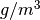. equivalent(other)Test for equivalence of two Atoms objects. get_atom(i)Return a dictionary containing the properties of the atom with index i. iteratoms()Iterate over atoms, calling get_atom() for each one md5_hash(ndigits)Hash an atoms object with a precision of ndigits decimal digits. mem_estimate()Estimate memory usage of this Atoms object, in bytes print_atom(i)Pretty-print the properties of the atom with index i read_from(source, **readargs)Replace contents of this Atoms object with Atoms read from source -
add_atoms(*args, **kwargs)¶ Add one or more atoms to an Atoms object. To add a single atom, ‘pos’ should be an array of size 3 and ‘z a single integer. To add multiple atoms either arrays of length ‘n_new’ should be passed, or another Atoms from which to copy data should be given as the ‘from’ argument.
Wrapper around Fortran interface
add_atomscontaining multiple routines:-
add_atoms(pos, z[, mass, travel, error]) Parameters: - pos (input rank-1 array(‘d’) with bounds (3)) –
- z (input int) –
- mass (input float, optional) –
- travel (input rank-1 array(‘i’) with bounds (3), optional) –
- error (in/output rank-0 array(int,’i’), optional) –
Routine is wrapper around Fortran routine
add_atom_singledefined in file src/libAtoms/Atoms_types.f95.
-
add_atoms(from[, error]) Parameters: - from (
Atomsobject) – - error (in/output rank-0 array(int,’i’), optional) –
Routine is wrapper around Fortran routine
atoms_joindefined in file src/libAtoms/Atoms_types.f95.- from (
-
add_atoms(pos, z[, mass, velo, acc, travel, error]) Parameters: - pos (input rank-2 array(‘d’) with bounds (qp_n0,qp_n1)) –
- z (input rank-1 array(‘i’) with bounds (qp_n2)) –
- mass (input rank-1 array(‘d’) with bounds (qp_n3), optional) –
- velo (input rank-2 array(‘d’) with bounds (qp_n4,qp_n5), optional) –
- acc (input rank-2 array(‘d’) with bounds (qp_n6,qp_n7), optional) –
- travel (input rank-2 array(‘i’) with bounds (qp_n8,qp_n9), optional) –
- error (in/output rank-0 array(int,’i’), optional) –
Routine is wrapper around Fortran routine
add_atom_multipledefined in file src/libAtoms/Atoms_types.f95.
-
-
add_cut_hydrogens(qmlist[, heuristics_nneighb_only, verbosity, alt_connect])¶ Given an atoms structure and a list of quantum atoms, find X-H bonds which have been cut and include the other atom of the pair in the quantum list.
Parameters: qmlist :
Tableobjectheuristics_nneighb_only : input int, optional
verbosity : input int, optional
alt_connect :
Connectionobject, optionalReferences
Routine is wrapper around Fortran routine
add_cut_hydrogensdefined in file src/libAtoms/clusters.f95.
-
add_property(name, value, n_cols=None, overwrite=None, property_type=None)[source]¶ Add a new property to this Atoms object.
name is the name of the new property and value should be either a scalar or an array representing the value, which should be either integer, real, logical or string.
If a scalar is given for value it is copied to every element in the new property. n_cols can be specified to create a 2D property from a scalar initial value - the default is 1 which creates a 1D property.
If an array is given for value it should either have shape (self.n,) for a 1D property or (n_cols,self.n) for a 2D property. In this case n_cols is inferred from the shape of the value and shouldn’t be passed as an argument.
If property_type is present, then no attempt is made to infer the type from value. This is necessary to resolve ambiguity between integer and logical types.
If property with the same type is already present then no error occurs.If overwrite is true, the value will be overwritten with that given in value, otherwise the old value is retained.
Here are some examples:
a = Atoms(n=10, lattice=10.0*fidentity(3)) a.add_property('mark', 1) # Scalar integer a.add_property('bool', False) # Scalar logical a.add_property('local_energy', 0.0) # Scalar real a.add_property('force', 0.0, n_cols=3) # Vector real a.add_property('label', '') # Scalar string a.add_property('count', [1,2,3,4,5,6,7,8,9,10]) # From list a.add_property('norm_pos', a.pos.norm()) # From 1D array a.add_property('pos', new_pos) # Overwrite positions with array new_pos # which should have shape (3,10)
-
add_property_from_pointer(*args, **kwargs)¶ Add a per-atom property to this atoms object, but point to existing space rather than allocating new space for it (as add_property does).
Wrapper around Fortran interface
add_property_from_pointercontaining multiple routines:-
add_property_from_pointer(name, ptr[, error]) Parameters: - name (input string(len=-1)) –
- ptr (input rank-3 array(‘S’) with bounds (qp_n0,qp_n1,(1))) –
- error (in/output rank-0 array(int,’i’), optional) –
Routine is wrapper around Fortran routine
atoms_add_property_p_strdefined in file src/libAtoms/Atoms_types.f95.
-
add_property_from_pointer(name, ptr[, error]) Parameters: - name (input string(len=-1)) –
- ptr (input rank-1 array(‘d’) with bounds (qp_n0)) –
- error (in/output rank-0 array(int,’i’), optional) –
Routine is wrapper around Fortran routine
atoms_add_property_p_realdefined in file src/libAtoms/Atoms_types.f95.
-
add_property_from_pointer(name, ptr[, error]) Parameters: - name (input string(len=-1)) –
- ptr (input rank-1 array(‘i’) with bounds (qp_n0)) –
- error (in/output rank-0 array(int,’i’), optional) –
Routine is wrapper around Fortran routine
atoms_add_property_p_intdefined in file src/libAtoms/Atoms_types.f95.
-
add_property_from_pointer(name, ptr[, error]) Parameters: - name (input string(len=-1)) –
- ptr (input rank-2 array(‘d’) with bounds (qp_n0,qp_n1)) –
- error (in/output rank-0 array(int,’i’), optional) –
Routine is wrapper around Fortran routine
atoms_add_property_p_real_adefined in file src/libAtoms/Atoms_types.f95.
-
add_property_from_pointer(name, ptr[, error]) Parameters: - name (input string(len=-1)) –
- ptr (input rank-2 array(‘i’) with bounds (qp_n0,qp_n1)) –
- error (in/output rank-0 array(int,’i’), optional) –
Routine is wrapper around Fortran routine
atoms_add_property_p_int_adefined in file src/libAtoms/Atoms_types.f95.
-
add_property_from_pointer(name, ptr[, error]) Parameters: - name (input string(len=-1)) –
- ptr (input rank-1 array(‘i’) with bounds (qp_n0)) –
- error (in/output rank-0 array(int,’i’), optional) –
Routine is wrapper around Fortran routine
atoms_add_property_p_logicaldefined in file src/libAtoms/Atoms_types.f95.
-
-
angular_momentum([origin, indices])¶ Return the angular momentum of all the atoms in this DynamicalSystem, defined by 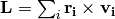.
Parameters: origin : input rank-1 array(‘d’) with bounds (3), optional
indices : input rank-1 array(‘i’) with bounds (qp_n0), optional
Returns: ret_l : rank-1 array(‘d’) with bounds (3)
References
Routine is wrapper around Fortran routine
atoms_angular_momentumdefined in file src/libAtoms/DynamicalSystem.f95.
-
assignment(to, from)¶ Overloaded assigment operators for Atoms objects. Overloaded assigment operators for Connection objects.
Parameters: to :
Atomsobjectfrom :
AtomsobjectReferences
Routine is wrapper around Fortran routine
assignmentdefined in file src/libAtoms/Atoms_types.f95.
-
bfs_grow_list(list, n[, nneighb_only, min_images_only, alt_connect])¶ On exit,
listwill have been grown bynbond hops.Parameters: list :
Tableobjectn : input int
nneighb_only : input int, optional
min_images_only : input int, optional
alt_connect :
Connectionobject, optionalReferences
Routine is wrapper around Fortran routine
bfs_grow_listdefined in file src/libAtoms/clusters.f95.
-
bfs_grow_single(atom, n[, nneighb_only, min_images_only, alt_connect])¶ On exit,
listwill containatom(with shift000) plus the atoms withinnbonds hops of it.Parameters: atom : input int
n : input int
nneighb_only : input int, optional
min_images_only : input int, optional
alt_connect :
Connectionobject, optionalReturns: list :
TableobjectReferences
Routine is wrapper around Fortran routine
bfs_grow_singledefined in file src/libAtoms/clusters.f95.
-
bfs_step(input[, nneighb_only, min_images_only, max_r, alt_connect, property, debugfile, error])¶ Execute one Breadth-First-Search move on the atomic connectivity graph.
Parameters: input :
TableobjectTable with intsize 4. First integer column is indices of atoms already in the region, next 3 are shifts.
nneighb_only : input int, optional
If present and true, sets whether only neighbours within the sum of the two respective covalent radii (multiplied by the atom’s nneightol) are included, irrespective of the cutoff in the atoms structure (default is true).
min_images_only : input int, optional
If true, there will be no repeated atomic indices in final list - only the minimum shift image of those found will be included. Default is false.
max_r : input float, optional
if present, only neighbors within this range will be included
alt_connect :
Connectionobject, optionalproperty : input rank-1 array(‘i’) with bounds (qp_n0), optional
debugfile :
InOutputobject, optionalerror : in/output rank-0 array(int,’i’), optional
Returns: output :
TableobjectTable with intsize 4, containing the new atomic indices and shifts.
References
Routine is wrapper around Fortran routine
bfs_stepdefined in file src/libAtoms/clusters.f95.
-
calc_connect([alt_connect, own_neighbour, store_is_min_image, skip_zero_zero_bonds, store_n_neighb, max_pos_change, did_rebuild, error])¶ Fast 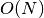 connectivity calculation routine. It divides the unit cell into similarly shaped subcells, of sufficient size that sphere of radius
cutoffis contained in a subcell, at least in the directions in which the unit cell is big enough. For very small unit cells, there is only one subcell, so the routine is equivalent to the standard 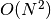 method.> Ifown_neighbouris true, atoms can be neighbours with their own periodic images. Ifcutoff_skinis present, effective cutoff is increased by this amount, and full recalculation of connectivity is only done when any atom has moved more than 0.5*cutoff_skin - otherwise calc_dists() is called to update the stored distance tables.Parameters: alt_connect :
Connectionobject, optionalown_neighbour : input int, optional
store_is_min_image : input int, optional
skip_zero_zero_bonds : input int, optional
store_n_neighb : input int, optional
max_pos_change : in/output rank-0 array(float,’d’), optional
did_rebuild : in/output rank-0 array(int,’i’), optional
error : in/output rank-0 array(int,’i’), optional
References
Routine is wrapper around Fortran routine
calc_connectdefined in file src/libAtoms/Atoms_types.f95.
-
calc_connect_hysteretic(cutoff_factor, cutoff_break_factor[, alt_connect, origin, extent, own_neighbour, store_is_min_image, store_n_neighb, error])¶ - As for
calc_connect, but perform the connectivity update hystertically: atoms must come within a relative distance ofcutoff_factorto be considered neighbours, and then will remainconnected until them move apart further than a relative distance of
cutoff_break_factor(all cutoff factors are relative to covalent radii).Typically
alt_connectshould be set to thehysteretic_connectattribute.originandextentvectors can be used to restrict the hysteretic region to only part of the entire system – theestimate_origin_extent()routine in clusters.f95 can be used to guess suitable values.
Parameters: cutoff_factor : input float
cutoff_break_factor : input float
alt_connect :
Connectionobject, optionalorigin : input rank-1 array(‘d’) with bounds (3), optional
extent : input rank-2 array(‘d’) with bounds (3,3), optional
own_neighbour : input int, optional
store_is_min_image : input int, optional
store_n_neighb : input int, optional
error : in/output rank-0 array(int,’i’), optional
References
Routine is wrapper around Fortran routine
calc_connect_hystereticdefined in file src/libAtoms/Atoms_types.f95.
-
calc_dists([alt_connect, parallel, error])¶ Update stored distance tables. To be called after moving atoms, in between calls to calc_connect().
Parameters: alt_connect :
Connectionobject, optionalparallel : input int, optional
error : in/output rank-0 array(int,’i’), optional
References
Routine is wrapper around Fortran routine
calc_distsdefined in file src/libAtoms/Atoms_types.f95.
-
calc_msd(at[, mask, reset_msd, persistent])¶ calculate mean squared displacement, with or without persistent atoms object without persistent atoms object, global storage is used, and calling on multiple trajcetories interspersed will not work. usually desirable to call undo_pbc_jumps and undo_CoM_motion first
Parameters: at :
Atomsobjectmask : input rank-1 array(‘i’) with bounds (qp_n0), optional
reset_msd : input int, optional
persistent : input int, optional
References
Routine is wrapper around Fortran routine
calc_msddefined in file src/libAtoms/Atoms_types.f95.
-
calc_qw(l[, do_q, do_w, cutoff, cutoff_transition_width])¶ Parameters: l : input int
do_q : input int, optional
do_w : input int, optional
cutoff : input float, optional
cutoff_transition_width : input float, optional
References
Routine is wrapper around Fortran routine
calc_qwdefined in file src/libAtoms/steinhardt_nelson_qw.f95.
-
calc_qw_grad(grad_ind, l[, do_q, do_w, cutoff, cutoff_transition_width])¶ Parameters: grad_ind : input int
l : input int
do_q : input int, optional
do_w : input int, optional
cutoff : input float, optional
cutoff_transition_width : input float, optional
References
Routine is wrapper around Fortran routine
calc_qw_graddefined in file src/libAtoms/steinhardt_nelson_qw.f95.
-
cell_volume(*args, **kwargs)¶ atoms_cell_volume
calculate volume of unit cell Returns the (unsigned) volume of the simulation cell of this Atoms
Returns: ret_atoms_cell_volume : float References
Routine is wrapper around Fortran routine
cell_volumedefined in file src/libAtoms/Atoms_types.f95.
-
center(vacuum=None, axis=(0, 1, 2), about=None)[source]¶ Center atoms in unit cell.
Centers the atoms in the unit cell, so there is the same amount of vacuum on all sides.
- vacuum: float (default: None)
- If specified adjust the amount of vacuum when centering. If vacuum=10.0 there will thus be 10 Angstrom of vacuum on each side.
- axis: int or sequence of ints
- Axis or axes to act on. Default: Act on all axes.
- about: float or array (default: None)
- If specified, center the atoms about <about>. I.e., about=(0., 0., 0.) (or just “about=0.”, interpreted identically), to center about the origin.
-
centre_of_mass(at[, index_list, mask, origin, error])¶ Calculate the centre of mass of an atoms object, using the closest images to the origin atom, or first atom if this is not specified. If origin is zero, use actual position, not minimum image. If an
index_listis present, just calculate it for that subset of atoms (then the origin atom is the first in this list unless it is specified separately).Note: Because the origin can be specified separately it need not be one of the atoms in the calculation.
Parameters: at :
atomsobjectindex_list : input rank-1 array(‘i’) with bounds (qp_n0), optional
mask : input rank-1 array(‘i’) with bounds (qp_n1), optional
origin : input int, optional
error : in/output rank-0 array(int,’i’), optional
Returns: ret_com : rank-1 array(‘d’) with bounds (3)
References
Routine is wrapper around Fortran routine
centre_of_massdefined in file src/libAtoms/Atoms_types.f95.
-
closest_atom(r, cell_image_na, cell_image_nb, cell_image_nc[, mask, dist, diff, error])¶ Parameters: r : input rank-1 array(‘d’) with bounds (3)
cell_image_na : input int
cell_image_nb : input int
cell_image_nc : input int
mask : input rank-1 array(‘i’) with bounds (qp_n0), optional
dist : in/output rank-0 array(float,’d’), optional
diff : in/output rank-1 array(‘d’) with bounds (3), optional
error : in/output rank-0 array(int,’i’), optional
Returns: ret_closest_atom : int
References
Routine is wrapper around Fortran routine
closest_atomdefined in file src/libAtoms/Atoms_types.f95.
-
coalesce_in_one_periodic_image([seed, is_periodic, error])¶ - move atoms around following neighbor list bonds so that all are in the same periodic image
- (that of
seed, if present)
poorly tested, especially for situations where not all atoms are in one connected clump probably needs a better subroutine name
Parameters: seed : input int, optional
is_periodic : input rank-1 array(‘i’) with bounds (3), optional
error : in/output rank-0 array(int,’i’), optional
References
Routine is wrapper around Fortran routine
coalesce_in_one_periodic_imagedefined in file src/libAtoms/Atoms_types.f95.
-
complement(at, inlist)¶ Return the complement of a list, i.e. all those atoms not included in list. Result is in outlist on exit.
Parameters: at :
Atomsobjectinlist :
TableobjectReturns: outlist :
TableobjectReferences
Routine is wrapper around Fortran routine
complementdefined in file src/libAtoms/Atoms_types.f95.
-
copy_entry(src, dst[, swap, error])¶ Copy an atom to a different index Move a single atom from one location to another one. The destination will be overriden.
Parameters: src : input int
dst : input int
swap : input int, optional
error : in/output rank-0 array(int,’i’), optional
References
Routine is wrapper around Fortran routine
copy_entrydefined in file src/libAtoms/Atoms_types.f95.
-
copy_properties(from, property_list[, case_sensitive, error])¶ Copy some properties from one atoms struct to another The destination will be overriden.
Parameters: from :
Atomsobjectproperty_list : input string(len=-1)
case_sensitive : input int, optional
error : in/output rank-0 array(int,’i’), optional
References
Routine is wrapper around Fortran routine
copy_propertiesdefined in file src/libAtoms/Atoms_types.f95.
-
copy_without_connect(to, from[, properties, properties_array, error])¶ Make a copy of the atoms object
fromwithout including connectivity information. Useful for saving the state of a dynamical simulation without incurring too great a memory cost.Parameters: to :
Atomsobjectfrom :
Atomsobjectproperties : input string(len=-1), optional
properties_array : input rank-2 array(‘S’) with bounds (qp_n0,(*)), optional
error : in/output rank-0 array(int,’i’), optional
References
Routine is wrapper around Fortran routine
atoms_copy_without_connectdefined in file src/libAtoms/Atoms_types.f95.
-
cosine(i, j, k[, error])¶ Cosine of the angle j–i–k
Parameters: i : input int
j : input int
k : input int
error : in/output rank-0 array(int,’i’), optional
Returns: ret_cosine : float
References
Routine is wrapper around Fortran routine
cosinedefined in file src/libAtoms/Atoms_types.f95.
-
cosine_neighbour(i, n, m)¶ Cosine of the angle n–i–m where {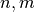} are the {:math:`n`th, :math:`m`th} neighbours of i
Parameters: i : input int
n : input int
m : input int
Returns: ret_cosine_neighbour : float
References
Routine is wrapper around Fortran routine
cosine_neighbourdefined in file src/libAtoms/Atoms_types.f95.
-
density()[source]¶ Density in units of . If mass property exists, use that, otherwise we use z and ElementMass table.
-
diff(i, j, shift)¶ Difference vector between atoms
 and
and  if they are separated by a shift of
if they are separated by a shift of shift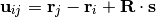
where
 is the
is the latticematrix and the shift
the shiftParameters: i : input int
j : input int
shift : input rank-1 array(‘i’) with bounds (3)
Returns: ret_diff : rank-1 array(‘d’) with bounds (3)
References
Routine is wrapper around Fortran routine
diffdefined in file src/libAtoms/Atoms_types.f95.
-
diff_min_image(*args, **kwargs)¶ - Return the minimum image difference vector between two atoms or
- positions. End points can be specified by any combination of atoms indices ‘i’ and ‘j’ and absolute coordinates ‘u’ and ‘w’.
Wrapper around Fortran interface
diff_min_imagecontaining multiple routines:-
diff_min_image(v, j) Parameters: - v (input rank-1 array(‘d’) with bounds (3)) –
- j (input int) –
Returns: ret_diff_vec_atom – rank-1 array(‘d’) with bounds (3)
Routine is wrapper around Fortran routine
diff_vec_atomdefined in file src/libAtoms/Atoms_types.f95.
-
diff_min_image(i, w) Parameters: - i (input int) –
- w (input rank-1 array(‘d’) with bounds (3)) –
Returns: ret_diff_atom_vec – rank-1 array(‘d’) with bounds (3)
Routine is wrapper around Fortran routine
diff_atom_vecdefined in file src/libAtoms/Atoms_types.f95.
-
diff_min_image(i, j[, shift]) Parameters: - i (input int) –
- j (input int) –
- shift (input rank-1 array(‘i’) with bounds (3), optional) –
Returns: ret_diff_atom_atom – rank-1 array(‘d’) with bounds (3)
Routine is wrapper around Fortran routine
diff_atom_atomdefined in file src/libAtoms/Atoms_types.f95.
-
diff_min_image(v, w) Parameters: - v (input rank-1 array(‘d’) with bounds (3)) –
- w (input rank-1 array(‘d’) with bounds (3)) –
Returns: ret_diff_vec_vec – rank-1 array(‘d’) with bounds (3)
Routine is wrapper around Fortran routine
diff_vec_vecdefined in file src/libAtoms/Atoms_types.f95.
-
direction_cosines(i, j, shift)¶ Given two atoms
and and a shift returns the direction
cosines of the differnece vector from to .Parameters: i : input int
j : input int
shift : input rank-1 array(‘i’) with bounds (3)
Returns: ret_direction_cosines : rank-1 array(‘d’) with bounds (3)
References
Routine is wrapper around Fortran routine
direction_cosinesdefined in file src/libAtoms/Atoms_types.f95.
-
direction_cosines_min_image(i, j[, error])¶ Direction cosines of the difference vector from
to Parameters: i : input int
j : input int
error : in/output rank-0 array(int,’i’), optional
Returns: ret_direction_cosines_min_image : rank-1 array(‘d’) with bounds (3)
References
Routine is wrapper around Fortran routine
direction_cosines_min_imagedefined in file src/libAtoms/Atoms_types.f95.
-
directionality(origin, list[, method, error])¶ Given an origin atom and a list of other atoms, give information as to whether the other atoms are distributed roughly linearly, planar or spherically around the origin atom.
The most notable use is to check that the splines in adjustable potential will be able to reproduce a randomly oriented force difference well.
The information returned is the set of eigenvectors and associated eigenvalues of the directionality ellipsoid. One large e-value suggests roughly linear clustering, two similar and one small e-values suggest a planar distribution, while three similar e-values suggests almost spherical distribution (when copies of the atoms reflected through the origin atom are also considered).
To acheive a more spherical distribution, atoms along the e-vector(s) with the smallest e-value(s) should be added to the index list (See
CosAngle_To_Linebelow).The matrix which is diagonalised is an average of the outer products of the unit vectors from the origin atom to the other atoms.
An outer product has 1 eigenvector which is the vector it was constructed from with eigenvalue 1 and the other eigenvectors have eigenvalue 0.
The eigenvalues of the averaged matrix sum to 1.
Parameters: origin : input int
The origin atom
list :
TableobjectIndices and shifts of the other atoms relative to origin
evalues : rank-1 array(‘d’) with bounds (3)
Eigenvalues of the directionality matrix
evectors : rank-2 array(‘d’) with bounds (3,3)
Eigenvectors of the directionality matrix
method : input int, optional
METHOD = 1Directionality ellipsoid method.METHOD = 2Singular Value Decomposition method (default)error : in/output rank-0 array(int,’i’), optional
References
Routine is wrapper around Fortran routine
directionalitydefined in file src/libAtoms/Atoms_types.f95.
-
distance(i, j, shift)¶ Return distance between atoms
iandjif they are separated by a shift ofshift.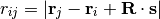
where
is the latticematrix and the shift.Parameters: i : input int
j : input int
shift : input rank-1 array(‘i’) with bounds (3)
Returns: ret_distance : float
References
Routine is wrapper around Fortran routine
distancedefined in file src/libAtoms/Atoms_types.f95.
-
distance_min_image(*args, **kwargs)¶ - This interface calculates the distance between the nearest periodic images of two points (or atoms).
- Return minimum image distance between two atoms or positions. End points can be specified by any combination of atoms indices ‘i’ and ‘j’ and absolute coordinates ‘u’ and ‘w’. If ‘shift’ is present the periodic shift between the two atoms or points will be returned in it.
Wrapper around Fortran interface
distance_min_imagecontaining multiple routines:-
distance_min_image(v, w[, shift]) Parameters: - v (input rank-1 array(‘d’) with bounds (3)) –
- w (input rank-1 array(‘d’) with bounds (3)) –
- shift (in/output rank-1 array(‘i’) with bounds (3), optional) –
Returns: ret_distance8_vec_vec – float
Routine is wrapper around Fortran routine
distance8_vec_vecdefined in file src/libAtoms/Atoms_types.f95.
-
distance_min_image(i, j[, shift]) Parameters: - i (input int) –
- j (input int) –
- shift (in/output rank-1 array(‘i’) with bounds (3), optional) –
Returns: ret_distance8_atom_atom – float
Routine is wrapper around Fortran routine
distance8_atom_atomdefined in file src/libAtoms/Atoms_types.f95.
-
distance_min_image(i, v[, shift]) Parameters: - i (input int) –
- v (input rank-1 array(‘d’) with bounds (3)) –
- shift (in/output rank-1 array(‘i’) with bounds (3), optional) –
Returns: ret_distance8_atom_vec – float
Routine is wrapper around Fortran routine
distance8_atom_vecdefined in file src/libAtoms/Atoms_types.f95.
-
distance_min_image(v, j[, shift]) Parameters: - v (input rank-1 array(‘d’) with bounds (3)) –
- j (input int) –
- shift (in/output rank-1 array(‘i’) with bounds (3), optional) –
Returns: ret_distance8_vec_atom – float
Routine is wrapper around Fortran routine
distance8_vec_atomdefined in file src/libAtoms/Atoms_types.f95.
-
edit()[source]¶ Modify atoms interactively through ase-gui viewer.
Conflicts leading to undesirable behaviour might arise when matplotlib has been pre-imported with certain incompatible backends and while trying to use the plot feature inside the interactive ag. To circumvent, please set matplotlib.use(‘gtk’) before calling this method.
-
equivalent(other)[source]¶ Test for equivalence of two Atoms objects.
Equivalence is less strong than equality. Equality (written self == other) requires all properties and parameters to be equal. Equivalence requires only that the number of atoms, positions, atomic numbers, unit cell and periodic boundary conditions match.
Note
The quippy expression a.equivalent(b) has the same definition as a == b in ASE. This means that a quippy.Atoms instance can be compared with an ase.Atoms instance using this method.
-
fake_smooth_pos(at, mix[, persistent])¶ Parameters: at :
Atomsobjectmix : input float
persistent : input int, optional
References
Routine is wrapper around Fortran routine
fake_smooth_posdefined in file src/libAtoms/Atoms_types.f95.
-
get_all_distances(mic=False)[source]¶ Return distances of all of the atoms with all of the atoms.
Use mic=True to use the Minimum Image Convention.
-
get_angle(list)[source]¶ Get angle formed by three atoms.
calculate angle between the vectors list[1]->list[0] and list[1]->list[2], where list contains the atomic indexes in question.
-
get_array(name, copy=True)[source]¶ Get an array.
Returns a copy unless the optional argument copy is false.
-
get_atom(i)[source]¶ Return a dictionary containing the properties of the atom with index i. If fortran_indexing=True (the default), i should be in range 1..self.n, otherwise it should be in range 0..(self.n-1).
-
get_center_of_mass(scaled=False)[source]¶ Get the center of mass.
If scaled=True the center of mass in scaled coordinates is returned.
-
get_chemical_formula(mode='hill')[source]¶ Get the chemial formula as a string based on the chemical symbols.
Parameters:
- mode: str
There are three different modes available:
‘all’: The list of chemical symbols are contracted to at string, e.g. [‘C’, ‘H’, ‘H’, ‘H’, ‘O’, ‘H’] becomes ‘CHHHOH’.
‘reduce’: The same as ‘all’ where repeated elements are contracted to a single symbol and a number, e.g. ‘CHHHOCHHH’ is reduced to ‘CH3OCH3’.
‘hill’: The list of chemical symbols are contracted to a string following the Hill notation (alphabetical order with C and H first), e.g. ‘CHHHOCHHH’ is reduced to ‘C2H6O’ and ‘SOOHOHO’ to ‘H2O4S’. This is default.
-
get_dihedral(list)[source]¶ Calculate dihedral angle.
Calculate dihedral angle between the vectors list[0]->list[1] and list[2]->list[3], where list contains the atomic indexes in question.
-
get_dipole_moment()[source]¶ Calculate the electric dipole moment for the atoms object.
Only available for calculators which has a get_dipole_moment() method.
-
get_distance(a0, a1, mic=False, vector=False)[source]¶ Return distance between two atoms.
Use mic=True to use the Minimum Image Convention. vector=True gives the distance vector (from a0 to a1).
-
get_distances(a, indices, mic=False, vector=False)[source]¶ Return distances of atom No.i with a list of atoms.
Use mic=True to use the Minimum Image Convention. vector=True gives the distance vector (from a to self[indices]).
-
get_forces(apply_constraint=True, md=False)[source]¶ Calculate atomic forces.
Ask the attached calculator to calculate the forces and apply constraints. Use apply_constraint=False to get the raw forces.
For molecular dynamics (md=True) we don’t apply the constraint to the forces but to the momenta.
-
get_moments_of_inertia(vectors=False)[source]¶ Get the moments of inertia along the principal axes.
The three principal moments of inertia are computed from the eigenvalues of the symmetric inertial tensor. Periodic boundary conditions are ignored. Units of the moments of inertia are amu*angstrom**2.
-
get_number_of_atoms()[source]¶ Returns the number of atoms.
Equivalent to len(atoms) in the standard ASE Atoms class.
-
get_param_value(*args, **kwargs)¶ get a (per-configuration) value from the atoms%params dictionary
Wrapper around Fortran interface
get_param_valuecontaining multiple routines:-
get_param_value(key[, error]) Parameters: - key (input string(len=-1)) –
- error (in/output rank-0 array(int,’i’), optional) –
Returns: value – float
Routine is wrapper around Fortran routine
atoms_get_param_value_realdefined in file src/libAtoms/Atoms_types.f95.
-
get_param_value(key[, error]) Parameters: - key (input string(len=-1)) –
- error (in/output rank-0 array(int,’i’), optional) –
Returns: value – string(len=10240)
Routine is wrapper around Fortran routine
atoms_get_param_value_strdefined in file src/libAtoms/Atoms_types.f95.
-
get_param_value(key, n0[, error]) Parameters: - key (input string(len=-1)) –
- n0 (input int) – shape(qp_value,0)
- error (in/output rank-0 array(int,’i’), optional) –
Returns: value – rank-1 array(‘d’) with bounds (qp_n0)
Routine is wrapper around Fortran routine
atoms_get_param_value_real_adefined in file src/libAtoms/Atoms_types.f95.
-
get_param_value(key[, error]) Parameters: - key (input string(len=-1)) –
- error (in/output rank-0 array(int,’i’), optional) –
Returns: value – int
Routine is wrapper around Fortran routine
atoms_get_param_value_intdefined in file src/libAtoms/Atoms_types.f95.
-
get_param_value(key[, error]) Parameters: - key (input string(len=-1)) –
- error (in/output rank-0 array(int,’i’), optional) –
Returns: value – int
Routine is wrapper around Fortran routine
atoms_get_param_value_logicaldefined in file src/libAtoms/Atoms_types.f95.
-
get_param_value(key, n0, n1[, error]) Parameters: - key (input string(len=-1)) –
- n0 (input int) – shape(qp_value,0)
- n1 (input int) – shape(qp_value,1)
- error (in/output rank-0 array(int,’i’), optional) –
Returns: value – rank-2 array(‘d’) with bounds (qp_n0,qp_n1)
Routine is wrapper around Fortran routine
atoms_get_param_value_real_a2defined in file src/libAtoms/Atoms_types.f95.
-
get_param_value(key, value[, error]) Parameters: - key (input string(len=-1)) –
- value (
Extendable_strobject) – - error (in/output rank-0 array(int,’i’), optional) –
Routine is wrapper around Fortran routine
atoms_get_param_value_esdefined in file src/libAtoms/Atoms_types.f95.
-
get_param_value(key, n0[, error]) Parameters: - key (input string(len=-1)) –
- n0 (input int) – shape(qp_value,0)
- error (in/output rank-0 array(int,’i’), optional) –
Returns: value – rank-1 array(‘i’) with bounds (qp_n0)
Routine is wrapper around Fortran routine
atoms_get_param_value_int_adefined in file src/libAtoms/Atoms_types.f95.
-
-
get_positions(wrap=False)[source]¶ Get array of positions. If wrap==True, wraps atoms back into unit cell.
-
get_potential_energies()[source]¶ Calculate the potential energies of all the atoms.
Only available with calculators supporting per-atom energies (e.g. classical potentials).
-
get_potential_energy(force_consistent=False, apply_constraint=True)[source]¶ Calculate potential energy.
Ask the attached calculator to calculate the potential energy and apply constraints. Use apply_constraint=False to get the raw forces.
When supported by the calculator, either the energy extrapolated to zero Kelvin or the energy consistent with the forces (the free energy) can be returned.
-
get_reciprocal_cell()[source]¶ Get the three reciprocal lattice vectors as a 3x3 ndarray.
Note that the commonly used factor of 2 pi for Fourier transforms is not included here.
-
get_scaled_positions(wrap=True)[source]¶ Get positions relative to unit cell.
If wrap is True, atoms outside the unit cell will be wrapped into the cell in those directions with periodic boundary conditions so that the scaled coordinates are between zero and one.
-
get_stress(voigt=True)[source]¶ Calculate stress tensor.
Returns an array of the six independent components of the symmetric stress tensor, in the traditional Voigt order (xx, yy, zz, yz, xz, xy) or as a 3x3 matrix. Default is Voigt order.
-
get_stresses()[source]¶ Calculate the stress-tensor of all the atoms.
Only available with calculators supporting per-atom energies and stresses (e.g. classical potentials). Even for such calculators there is a certain arbitrariness in defining per-atom stresses.
Get integer array of tags.
-
has(name)[source]¶ Check for existence of array.
name must be one of: ‘tags’, ‘momenta’, ‘masses’, ‘magmoms’, ‘charges’.
-
has_property(name)¶ Convenience function to test if a property is present. No checking of property type is done. Property names are case-insensitive.
Parameters: name : input string(len=-1) Returns: ret_atoms_has_property : int References
Routine is wrapper around Fortran routine
has_propertydefined in file src/libAtoms/Atoms_types.f95.
-
index_to_z_index(index)¶ Convert from a single index in range 1..this.N to a CASTEP-style (element, index) pair
Parameters: index : input int Returns: ret_z_index : int References
Routine is wrapper around Fortran routine
index_to_z_indexdefined in file src/libAtoms/Atoms_types.f95.
-
is_domain_decomposed(*args, **kwargs)¶ atoms_is_domain_decomposed
Is this atoms object domain decomposed?
Returns: ret_ : int References
Routine is wrapper around Fortran routine
is_domain_decomposeddefined in file src/libAtoms/Atoms_types.f95.
-
is_initialised()¶ Is this atoms object initialised?
Parameters: ret_ : int References
Routine is wrapper around Fortran routine
is_initialiseddefined in file src/libAtoms/Atoms_types.f95.
-
is_min_image(i[, alt_connect, error])¶ Parameters: i : input int
alt_connect :
Connectionobject, optionalerror : in/output rank-0 array(int,’i’), optional
Returns: ret_is_min_image : int
References
Routine is wrapper around Fortran routine
is_min_imagedefined in file src/libAtoms/Atoms_types.f95.
-
is_nearest_neighbour(i, n[, alt_connect])¶ Test if an atom’s :math:`n`th neighbour is one if its nearest neighbours
Parameters: i : input int
n : input int
alt_connect :
Connectionobject, optionalReturns: ret_is_nearest_neighbour : int
References
Routine is wrapper around Fortran routine
is_nearest_neighbourdefined in file src/libAtoms/Atoms_types.f95.
-
is_nearest_neighbour_abs_index(i, j[, alt_connect])¶ Test if an atom
jis one of ``i``s nearest neighboursParameters: i : input int
j : input int
alt_connect :
Connectionobject, optionalReturns: ret_is_nearest_neighbour_abs_index : int
References
Routine is wrapper around Fortran routine
is_nearest_neighbour_abs_indexdefined in file src/libAtoms/Atoms_types.f95.
-
kinetic_energy([mpi_obj, local_ke, error])¶ Return the total kinetic energy 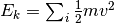
Parameters: mpi_obj :
MPI_contextobject, optionallocal_ke : input int, optional
error : in/output rank-0 array(int,’i’), optional
Returns: ret_ke : float
References
Routine is wrapper around Fortran routine
atoms_kinetic_energydefined in file src/libAtoms/DynamicalSystem.f95.
-
kinetic_virial([mpi_obj, error])¶ Return the total kinetic virial 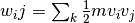
Parameters: mpi_obj :
MPI_contextobject, optionalerror : in/output rank-0 array(int,’i’), optional
Returns: ret_kv : rank-2 array(‘d’) with bounds (3,3)
References
Routine is wrapper around Fortran routine
atoms_kinetic_virialdefined in file src/libAtoms/DynamicalSystem.f95.
-
list_matching_prop(at, list, name, value[, error])¶ Find atoms which have integer property
propwith valuevalueand return them in a tablelist.Parameters: at :
atomsobjectlist :
Tableobjectname : input string(len=-1)
value : input int
error : in/output rank-0 array(int,’i’), optional
References
Routine is wrapper around Fortran routine
list_matching_propdefined in file src/libAtoms/Atoms_types.f95.
-
make_convex(list)¶ Add atoms to
listto make the selection region convex, i.e. if and
are nearest neighbours, with in the list and not then will be added
if more than half its nearest neighbours are in the list.Parameters: list : TableobjectReferences
Routine is wrapper around Fortran routine
make_convexdefined in file src/libAtoms/clusters.f95.
-
map_into_cell(*args, **kwargs)¶ atoms_map_into_cell
- Map atomic positions into the unit cell so that lattice
- coordinates satisfy 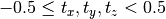
Map atomic fractional positions back into the unit cell
References
Routine is wrapper around Fortran routine
map_into_celldefined in file src/libAtoms/Atoms_types.f95.
-
mark_cylinder(p, v, r[, periodic, mark_name, mark_value, intersection])¶ Mark atoms in a cylinder centred on the point p with axis v and radius r
Parameters: p : input rank-1 array(‘d’) with bounds (3)
v : input rank-1 array(‘d’) with bounds (3)
r : input float
periodic : input int, optional
mark_name : input string(len=-1), optional
mark_value : input int, optional
intersection : input int, optional
References
Routine is wrapper around Fortran routine
mark_cylinderdefined in file src/libAtoms/frametools.f95.
-
mark_sphere(p, r[, periodic, mark_name, mark_value, intersection])¶ Mark atoms in a cylinder centred on the point p with radius r
Parameters: p : input rank-1 array(‘d’) with bounds (3)
r : input float
periodic : input int, optional
mark_name : input string(len=-1), optional
mark_value : input int, optional
intersection : input int, optional
References
Routine is wrapper around Fortran routine
mark_spheredefined in file src/libAtoms/frametools.f95.
-
md5_hash(ndigits)[source]¶ Hash an atoms object with a precision of ndigits decimal digits. Atomic numbers, lattice and fractional positions are fed to MD5 to form the hash.
-
moment_of_inertia_tensor([origin])¶ Parameters: origin : input rank-1 array(‘d’) with bounds (3), optional Returns: ret_moi : rank-2 array(‘d’) with bounds (3,3) References
Routine is wrapper around Fortran routine
moment_of_inertia_tensordefined in file src/libAtoms/DynamicalSystem.f95.
-
momentum([indices])¶ Return the total momentum
 .
Optionally only include the contribution of a subset of atoms.
.
Optionally only include the contribution of a subset of atoms.Parameters: indices : input rank-1 array(‘i’) with bounds (qp_n0), optional Returns: ret_p : rank-1 array(‘d’) with bounds (3) References
Routine is wrapper around Fortran routine
atoms_momentumdefined in file src/libAtoms/DynamicalSystem.f95.
-
n_neighbours(i[, max_dist, max_factor, alt_connect, error])¶ Neighbour list stuff Return the number of neighbour that atom
ihas. If the optional arguments max_dist or max_factor are present then only neighbours closer than this cutoff are included.alt_connectcan be set to another Connection object to use alternative connectivity information, for examplehysteretic_connect.Parameters: i : input int
max_dist : input float, optional
max_factor : input float, optional
alt_connect :
Connectionobject, optionalerror : in/output rank-0 array(int,’i’), optional
Returns: ret_n : int
References
Routine is wrapper around Fortran routine
n_neighboursdefined in file src/libAtoms/Atoms_types.f95.
-
neighbour(i, n[, distance, diff, cosines, shift, index, max_dist, jn, alt_connect, error])¶ Return the index of the 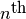 neighbour of atom
. Together with the
previous function, this facilites a loop over the neighbours of atom . Optionally, we
return other geometric information, such as distance, direction cosines and difference vector,
and also a direct index into the neighbour tables. If 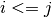, this is an index into neighbour1(i); if 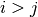, it is an index intoneighbour1(j).do n = 1,atoms_n_neighbours(at, i) j = atoms_neighbour(at, i, n, distance, diff, cosines, shift, index) ... end do
If distance max_dist, return 0, and do not waste time calculating other quantities.
alt_connecthas the same meaning asn_neighbours.Here’s a typical loop construct in Python. Note how r and u are created before the loop: arguments which are both optional and
intent(out)in Fortran are converted tointent(in,out)for quippy. ::r = farray(0.0) u = fzeros(3) for i in frange(at.n): for n in frange(at.n_neighbours(i)): j = at.neighbour(i, n, distance=r, diff=u)
Parameters: i : input int
n : input int
distance : in/output rank-0 array(float,’d’), optional
diff : in/output rank-1 array(‘d’) with bounds (3), optional
cosines : in/output rank-1 array(‘d’) with bounds (3), optional
shift : in/output rank-1 array(‘i’) with bounds (3), optional
index : in/output rank-0 array(int,’i’), optional
max_dist : input float, optional
jn : in/output rank-0 array(int,’i’), optional
alt_connect :
Connectionobject, optionalerror : in/output rank-0 array(int,’i’), optional
Returns: ret_j : int
References
Routine is wrapper around Fortran routine
neighbourdefined in file src/libAtoms/Atoms_types.f95.
-
print_([file, error])¶ Print a verbose textual description of an Atoms object to the default logger or to a specificied Inoutput object. Print a verbose textual description of a Connection object to the default logger or to a specificied Inoutput object.
Parameters: file :
InOutputobject, optionalerror : in/output rank-0 array(int,’i’), optional
References
Routine is wrapper around Fortran routine
print_defined in file src/libAtoms/Atoms_types.f95.
-
prop_names_string([with_types, error])¶ Parameters: with_types : input int, optional
error : in/output rank-0 array(int,’i’), optional
Returns: ret_prop_names_string : string(len=10240)
References
Routine is wrapper around Fortran routine
prop_names_stringdefined in file src/libAtoms/Atoms_types.f95.
-
rattle(stdev=0.001, seed=42)[source]¶ Randomly displace atoms.
This method adds random displacements to the atomic positions, taking a possible constraint into account. The random numbers are drawn from a normal distribution of standard deviation stdev.
For a parallel calculation, it is important to use the same seed on all processors!
-
classmethod
read(source, format=None, **kwargs)[source]¶ Class method to read Atoms object from file source according to format
If format is None, filetype is inferred from filename. Returns a new Atoms instance; to read into an existing Atoms object, use the read_from() method.
If source corresponds to a known format then it used to construct an appropriate iterator from the
AtomsReadersdictionary. See Supported File Formats for a list of supported file formats.If source corresponds to an unknown format then it is expected to be an iterator returning
Atomsobjects.
-
read_cinoutput(cio[, properties, properties_array, frame, zero, range, str, estr, error])¶ Parameters: cio :
CInOutputobjectproperties : input string(len=-1), optional
properties_array : input rank-2 array(‘S’) with bounds (qp_n0,(*)), optional
frame : input int, optional
zero : input int, optional
range : input rank-1 array(‘i’) with bounds (2), optional
str : input string(len=-1), optional
estr :
Extendable_strobject, optionalerror : in/output rank-0 array(int,’i’), optional
References
Routine is wrapper around Fortran routine
atoms_read_cinoutputdefined in file src/libAtoms/CInOutput.f95.
-
read_from(source, **readargs)[source]¶ Replace contents of this Atoms object with Atoms read from source
-
realpos(i)¶ Return the real position of atom
i, taking into account the stored travel across the periodic boundary conditions.Parameters: i : input int Returns: ret_realpos : rank-1 array(‘d’) with bounds (3) References
Routine is wrapper around Fortran routine
realposdefined in file src/libAtoms/Atoms_types.f95.
-
remove_atoms(*args, **kwargs)¶ Remove one or more atoms from an Atoms object.
Wrapper around Fortran interface
remove_atomscontaining multiple routines:-
remove_atoms(mask[, error]) Parameters: - mask (input rank-1 array(‘i’) with bounds (qp_n0)) –
- error (in/output rank-0 array(int,’i’), optional) –
Routine is wrapper around Fortran routine
remove_atom_multiple_maskdefined in file src/libAtoms/Atoms_types.f95.
-
remove_atoms(i[, error]) Parameters: - i (input int) –
- error (in/output rank-0 array(int,’i’), optional) –
Routine is wrapper around Fortran routine
remove_atom_singledefined in file src/libAtoms/Atoms_types.f95.
-
remove_atoms(atom_indices[, error]) Parameters: - atom_indices (input rank-1 array(‘i’) with bounds (qp_n0)) –
- error (in/output rank-0 array(int,’i’), optional) –
Routine is wrapper around Fortran routine
remove_atom_multipledefined in file src/libAtoms/Atoms_types.f95.
-
-
remove_property(name[, error])¶ Remove a property from this atoms object
Parameters: name : input string(len=-1)
error : in/output rank-0 array(int,’i’), optional
References
Routine is wrapper around Fortran routine
remove_propertydefined in file src/libAtoms/Atoms_types.f95.
-
repeat(rep)[source]¶ Create new repeated atoms object.
The rep argument should be a sequence of three positive integers like (2,3,1) or a single integer (r) equivalent to (r,r,r).
-
repoint(*args, **kwargs)¶ OMIT
References
Routine is wrapper around Fortran routine
atoms_repointdefined in file src/libAtoms/Atoms_types.f95.
-
rotate(axis, angle[, rank1, rank2])¶ Rotate this Atoms object, transforming all rank 1 and rank 2 tensors parameters and properties
Parameters: axis : input rank-1 array(‘d’) with bounds (3)
angle : input float
rank1 : input string(len=-1), optional
rank2 : input string(len=-1), optional
References
Routine is wrapper around Fortran routine
rotatedefined in file src/libAtoms/Atoms_types.f95.
-
rotate_dihedral(list, angle, mask=None)[source]¶ Rotate dihedral angle.
Complementing the two routines above: rotate a group by a predefined dihedral angle, starting from its current configuration
-
rotate_euler(center=(0, 0, 0), phi=0.0, theta=0.0, psi=0.0)[source]¶ Rotate atoms via Euler angles.
See e.g http://mathworld.wolfram.com/EulerAngles.html for explanation.
Parameters:
- center :
- The point to rotate about. A sequence of length 3 with the coordinates, or ‘COM’ to select the center of mass, ‘COP’ to select center of positions or ‘COU’ to select center of cell.
- phi :
- The 1st rotation angle around the z axis.
- theta :
- Rotation around the x axis.
- psi :
- 2nd rotation around the z axis.
-
select(mask=None, list=None, orig_index=True)[source]¶ Return a new
Atomscontaining a subset of the atoms in this Atoms objectOne of either mask or list should be present. If mask is given it should be a rank one array of length self.n. In this case atoms corresponding to true values in mask will be included in the result. If list is present it should be an arry of list containing atom indices to include in the result.
If orig_index is True (default), the new object will contain an
orig_indexproperty mapping the indices of the new atoms back to the original larger Atoms object.
-
set_angle(list, angle, mask=None)[source]¶ Set angle formed by three atoms.
Sets the angle between vectors list[1]->list[0] and list[1]->list[2].
Same usage as in set_dihedral.
-
set_array(name, a, dtype=None, shape=None)[source]¶ Update array.
If shape is not None, the shape of a will be checked. If a is None, then the array is deleted.
-
set_atomic_numbers(numbers, set_species=True)[source]¶ Set atomic numbers and optionally also species property (default True)
-
set_atoms(*args, **kwargs)¶ - Set atomic numbers (in the ‘z’ integer property), species names
- (in ‘species’ string property) and optionally masses (if ‘mass’ property exists in the Atoms object).
Wrapper around Fortran interface
set_atomscontaining multiple routines:-
set_atoms(z) Parameters: z (input int) – Routine is wrapper around Fortran routine
atoms_set_atoms_singlezdefined in file src/libAtoms/Atoms_types.f95.
-
set_atoms(z[, mass]) Set atomic numbers and optionally masses (if mass property is present) If
massis not specified thenElementMass(Z)is used.Parameters: - z (input rank-1 array(‘i’) with bounds (qp_n0)) –
- mass (input rank-1 array(‘d’) with bounds (qp_n1), optional) –
Routine is wrapper around Fortran routine
atoms_set_atomsdefined in file src/libAtoms/Atoms_types.f95.
-
set_cell(cell, scale_atoms=False, fix=None)[source]¶ Set unit cell vectors.
Parameters:
- cell :
- Unit cell. A 3x3 matrix (the three unit cell vectors) or just three numbers for an orthorhombic cell.
- scale_atoms : bool
- Fix atomic positions or move atoms with the unit cell? Default behavior is to not move the atoms (scale_atoms=False).
Examples:
Two equivalent ways to define an orthorhombic cell:
>>> a.set_cell([a, b, c]) >>> a.set_cell([(a, 0, 0), (0, b, 0), (0, 0, c)])
FCC unit cell:
>>> a.set_cell([(0, b, b), (b, 0, b), (b, b, 0)])
-
set_chemical_symbols(symbols, set_species=True)[source]¶ Set chemical symbols - sets Z and optionally also species properties (default True)
-
set_comm_property(propname[, comm_atoms, comm_ghosts, comm_reverse])¶ Set which properties to communicate when comm_atoms: Communicate when atom is moved to different domain.
Forces, for example, may be excluded since they are updated on every time step.- comm_ghosts: Communicate when atom is dublicated as a ghost on a domain.
- Masses, for example, might be excluded since atoms are propagated on the domain they reside in only.
- comm_reverse: Communicate back from ghost atoms to the original domain atom
- and accumulate
By default, properties are not communicated.
Parameters: propname : input string(len=-1)
comm_atoms : input int, optional
comm_ghosts : input int, optional
comm_reverse : input int, optional
References
Routine is wrapper around Fortran routine
set_comm_propertydefined in file src/libAtoms/Atoms_types.f95.
-
set_constraint(constraint=None)[source]¶ Apply one or more constrains.
The constraint argument must be one constraint object or a list of constraint objects.
-
set_cutoff(cutoff[, cutoff_skin])¶ set a uniform cutoff Specify a uniform neighbour cutoff throughout the system. Optionally set
cutoff_skinat the same time.Parameters: cutoff : input float
cutoff_skin : input float, optional
References
Routine is wrapper around Fortran routine
set_cutoffdefined in file src/libAtoms/Atoms_types.f95.
-
set_cutoff_minimum(cutoff[, cutoff_skin])¶ increase cutoff Set the cutoff to at least the requested value Optionally set
cutoff_skinat the same time.Parameters: cutoff : input float
cutoff_skin : input float, optional
References
Routine is wrapper around Fortran routine
set_cutoff_minimumdefined in file src/libAtoms/Atoms_types.f95.
-
set_dihedral(list, angle, mask=None, indices=None)[source]¶ Set the dihedral angle between vectors list[0]->list[1] and list[2]->list[3] by changing the atom indexed by list[3] if mask is not None, all the atoms described in mask (read: the entire subgroup) are moved. Alternatively to the mask, the indices of the atoms to be rotated can be supplied.
example: the following defines a very crude ethane-like molecule and twists one half of it by 30 degrees.
>>> atoms = Atoms('HHCCHH', [[-1, 1, 0], [-1, -1, 0], [0, 0, 0], [1, 0, 0], [2, 1, 0], [2, -1, 0]]) >>> atoms.set_dihedral([1,2,3,4],7*pi/6,mask=[0,0,0,1,1,1])
-
set_distance(a0, a1, distance, fix=0.5, mic=False)[source]¶ Set the distance between two atoms.
Set the distance between atoms a0 and a1 to distance. By default, the center of the two atoms will be fixed. Use fix=0 to fix the first atom, fix=1 to fix the second atom and fix=0.5 (default) to fix the center of the bond.
-
set_initial_magnetic_moments(magmoms=None)[source]¶ Set the initial magnetic moments.
Use either one or three numbers for every atom (collinear or non-collinear spins).
-
set_lattice(lattice, scale_positions=False)[source]¶ Change the lattice vectors, keeping the inverse lattice vectors up to date. Optionally map the existing atoms into the new cell and recalculate connectivity (by default scale_positions=False).
-
set_map_shift([error])¶ Parameters: error : in/output rank-0 array(int,’i’), optional References
Routine is wrapper around Fortran routine
set_map_shiftdefined in file src/libAtoms/Atoms_types.f95.
-
set_masses(masses='defaults')[source]¶ Set atomic masses.
The array masses should contain a list of masses. In case the masses argument is not given or for those elements of the masses list that are None, standard values are set.
-
set_param_value(*args, **kwargs)¶ set a (per-configuration) value from the atoms%params dictionary
Wrapper around Fortran interface
set_param_valuecontaining multiple routines:-
set_param_value(key, value) Parameters: - key (input string(len=-1)) –
- value (input rank-1 array(‘i’) with bounds (qp_n0)) –
Routine is wrapper around Fortran routine
atoms_set_param_value_int_adefined in file src/libAtoms/Atoms_types.f95.
-
set_param_value(key, value) Parameters: - key (input string(len=-1)) –
- value (input rank-2 array(‘d’) with bounds (qp_n0,qp_n1)) –
Routine is wrapper around Fortran routine
atoms_set_param_value_real_a2defined in file src/libAtoms/Atoms_types.f95.
-
set_param_value(key, value) Parameters: - key (input string(len=-1)) –
- value (input int) –
Routine is wrapper around Fortran routine
atoms_set_param_value_intdefined in file src/libAtoms/Atoms_types.f95.
-
set_param_value(key, value) Parameters: - key (input string(len=-1)) –
- value (input string(len=-1)) –
Routine is wrapper around Fortran routine
atoms_set_param_value_strdefined in file src/libAtoms/Atoms_types.f95.
-
set_param_value(key, value) Parameters: - key (input string(len=-1)) –
- value (input rank-1 array(‘d’) with bounds (qp_n0)) –
Routine is wrapper around Fortran routine
atoms_set_param_value_real_adefined in file src/libAtoms/Atoms_types.f95.
-
set_param_value(key, value) Parameters: - key (input string(len=-1)) –
- value (input float) –
Routine is wrapper around Fortran routine
atoms_set_param_value_realdefined in file src/libAtoms/Atoms_types.f95.
-
set_param_value(key, value) Parameters: - key (input string(len=-1)) –
- value (input int) –
Routine is wrapper around Fortran routine
atoms_set_param_value_logicaldefined in file src/libAtoms/Atoms_types.f95.
-
Set tags for all atoms. If only one tag is supplied, it is applied to all atoms.
-
set_zs([error])¶ set Zs from species
Parameters: error : in/output rank-0 array(int,’i’), optional References
Routine is wrapper around Fortran routine
set_zsdefined in file src/libAtoms/Atoms_types.f95.
-
shuffle(new_indices[, error])¶ Reshuffle the order of the atomic indices to new_indices.
Parameters: new_indices : input rank-1 array(‘i’) with bounds (qp_n0)
error : in/output rank-0 array(int,’i’), optional
References
Routine is wrapper around Fortran routine
shuffledefined in file src/libAtoms/Atoms_types.f95.
-
sort(sort_index[, error])¶ sort atoms according to an externally provided field
Parameters: sort_index : input rank-1 array(‘d’) with bounds (qp_n0)
error : in/output rank-0 array(int,’i’), optional
References
Routine is wrapper around Fortran routine
sort_by_rindexdefined in file src/libAtoms/Atoms_types.f95.
-
sort_by_rindex(sort_index[, error])¶ sort atoms according to an externally provided field
Parameters: sort_index : input rank-1 array(‘d’) with bounds (qp_n0)
error : in/output rank-0 array(int,’i’), optional
References
Routine is wrapper around Fortran routine
atoms_sort_by_rindexdefined in file src/libAtoms/Atoms_types.f95.
-
transform_basis(l[, rank1, rank2, error])¶ Basis transformation of rank 0, 1 and 2 tensors real values in Atoms object. This routine transforms rank 1 and rank 2 tensors in this.params and this.properties. Tensors are identified by having the correct type (real arrays) and shape (i.e. 3, (3, 3), (3, this.N) (9, this.N) for vector paramters, tensor parameters, vector properties and tensor properties respectively), and by having a name which is included in the relevant list. Extra names can be added to the lists with the rank1 and rank2 arguments.
Parameters: l : input rank-2 array(‘d’) with bounds (3,3)
rank1 : input string(len=-1), optional
rank2 : input string(len=-1), optional
error : in/output rank-0 array(int,’i’), optional
References
Routine is wrapper around Fortran routine
transform_basisdefined in file src/libAtoms/Atoms_types.f95.
-
translate(displacement)[source]¶ Translate atomic positions.
The displacement argument can be a float an xyz vector or an nx3 array (where n is the number of atoms).
-
undo_com_motion(at[, persistent])¶ undo center of mass motion, with or without persistent atoms object without persistent atoms object, global storage is used, and calling on multiple trajcetories interspersed will not work
Parameters: at :
Atomsobjectpersistent : input int, optional
References
Routine is wrapper around Fortran routine
undo_com_motiondefined in file src/libAtoms/Atoms_types.f95.
-
undo_pbc_jumps(at[, persistent])¶ undo pbc jumps, assuming nearest periodic image, with or without persistent atoms object without persistent atoms object, global storage is used, and calling on multiple trajcetories interspersed will not work
Parameters: at :
Atomsobjectpersistent : input int, optional
References
Routine is wrapper around Fortran routine
undo_pbc_jumpsdefined in file src/libAtoms/Atoms_types.f95.
-
unskew_cell([error])¶ - Unskew lattice so the cosines of the lattice angles fall between
- 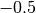 and 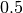
Unskew lattice so the cosines of the lattice angles fall between and
Parameters: error : in/output rank-0 array(int,’i’), optional References
Routine is wrapper around Fortran routine
unskew_celldefined in file src/libAtoms/Atoms_types.f95.
-
wrap(center=(0.5, 0.5, 0.5), pbc=None, eps=1e-07)[source]¶ Wrap positions to unit cell.
Parameters:
- center: three float
- The positons in fractional coordinates that the new positions will be nearest possible to.
- pbc: one or 3 bool
- For each axis in the unit cell decides whether the positions will be moved along this axis. By default, the boundary conditions of the Atoms object will be used.
- eps: float
- Small number to prevent slightly negative coordinates from beeing wrapped.
See also the
ase.utils.geometry.wrap_positions()function. Example:>>> a = Atoms('H', ... [[-0.1, 1.01, -0.5]], ... cell=[[1, 0, 0], [0, 1, 0], [0, 0, 4]], ... pbc=[1, 1, 0]) >>> a.wrap() >>> a.positions array([[ 0.9 , 0.01, -0.5 ]])
-
write(dest=None, format=None, properties=None, prefix=None, **kwargs)[source]¶ Write this
Atomsobject to dest. If format is absent it is inferred from the file extension or type of dest, as described for theread()method. If properties is present, it should be a list of property names to include in the output file, e.g. [‘species’, ‘pos’].See Supported File Formats for a list of supported file formats.
-
write_cinoutput(cio[, properties, properties_array, prefix, int_format, real_format, frame, shuffle, deflate, deflate_level, estr, error])¶ Parameters: cio :
CInOutputobjectproperties : input string(len=-1), optional
properties_array : input rank-2 array(‘S’) with bounds (qp_n0,(*)), optional
prefix : input string(len=-1), optional
int_format : input string(len=-1), optional
real_format : input string(len=-1), optional
frame : input int, optional
shuffle : input int, optional
deflate : input int, optional
deflate_level : input int, optional
estr :
Extendable_strobject, optionalerror : in/output rank-0 array(int,’i’), optional
References
Routine is wrapper around Fortran routine
atoms_write_cinoutputdefined in file src/libAtoms/CInOutput.f95.
-
z_index_to_index(z, z_index[, error])¶ Inverse of atoms_index_to_z_index
Parameters: z : input int
z_index : input int
error : in/output rank-0 array(int,’i’), optional
Returns: ret_index : int
References
Routine is wrapper around Fortran routine
z_index_to_indexdefined in file src/libAtoms/Atoms_types.f95.
-
zero([indices])¶ Zero data in an Atoms structure — this doesn``t finalise it or change it``s size. We zero
this.pos,this.Zandthis.species.Parameters: indices : input int, optional
Optionally only zero the specified indices.
References
Routine is wrapper around Fortran routine
zerodefined in file src/libAtoms/Atoms_types.f95.
-
zero_angular_momentum(*args, **kwargs)¶ give the system a rigid body rotation so as to zero the angular momentum about the centre of mass
References
Routine is wrapper around Fortran routine
zero_angular_momentumdefined in file src/libAtoms/DynamicalSystem.f95.
-
arrays¶ Provides access to ASE arrays, stored in QUIP properties dict
-
calc¶ Calculator object.
-
cell¶ Attribute for direct manipulation of the unit cell.
-
connect¶ Connectionobject
-
constraints¶ Constraints of the atoms.
-
cutoff¶ Cutoff distance for neighbour calculations. Default -1.0 (unset).
-
cutoff_skin¶ If set, increase cutoff by this amount to reduce calc_connect() frequency
-
domain¶ Domain decomposition object
-
fixed_size¶ Can the number of atoms be changed after initialisation?
-
g¶ Inverse lattice (stored for speed)
-
hysteretic_connect¶ Hysteretic
Connectionobject
-
indices¶ Return array of atoms indices
If global
fortran_indexingis True, returns FortranArray containing numbers 1..self.n. Otherwise, returns a standard numpuy array containing numbers in range 0..(self.n-1).
-
info¶ ASE info dictionary
Entries are actually stored in QUIP params dictionary.
-
lattice¶ Lattice vectors, as columns:
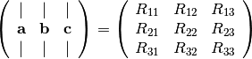
i.e. =
lattice(:,1), =
= lattice(:,2)and
lattice(:,3).
-
n¶ The number of atoms held (including ghost particles)
-
nbuffer¶ The number of atoms that can be stored in the buffers of this Atoms object
-
ndomain¶ The number of atoms held by the local process (excluding ghost particles)
-
nneightol¶ Count as nearest neighbour if sum of covalent radii times
this.nneightolgreater than distance between atoms. Used in cluster carving.
-
numbers¶ Attribute for direct manipulation of the atomic numbers.
-
own_this¶ Do I own myself?
-
params¶ Dictionaryof parameters. Useful for storing data about this Atoms object, for example the temperature, total energy or applied strain. The data stored here is automatically saved to and loaded from XYZ and NetCDF files.
-
pbc¶ Attribute for direct manipulation of the periodic boundary condition flags.
-
positions¶ Attribute for direct manipulation of the positions.
-
properties¶ Dictionaryof atomic properties. A property is an array of shape (m,`n`) where n is the number of atoms and m is either one (for scalar properties) or three (vector properties). Properties can be integer, real, string or logical. String properties have a fixed length ofTABLE_STRING_LENGTH=10characters.From Fortran, the following default properties are aliased with arrays within the Atoms type:
Z- Atomic numbers, dimension is actually 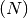speciesNames of elementsmove_maskAtoms withmove_maskset to zero are fixeddamp_maskDamping is only applied to those atoms withdamp_maskset to 1. By default this is set to 1 for all atoms.thermostat_regionWhich thermostat is applied to each atoms. By default this is set to 1 for all atoms.travelTravel across periodic conditions. 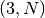 integer array. See meth:map_into_cell below.posarray of atomic positions, in . Position of atom is
. Position of atom is pos(:,i)massAtomic masses, dimension isveloarray of atomic velocities, in /fs.accarray of accelerations in /fs:math:^2avgposarray of time-averaged atomic positions.oldposarray of positions of atoms at previous time step.avg_keTime-averaged atomic kinetic energy
Custom properties are most conveniently accessed by assign a pointer to them with the
assign_pointer()routines.From Python, each property is automatically visible as a array attribute of the
Atomsobject, for example the atomic positions are stored in a real vector property called pos, and can be accessed asat.pos.Properties can be added with the
add_property()method and removed withremove_property().
-
ref_count¶ Reference counter
-
-
quippy.atoms.make_lattice(a[, b, c, alpha, beta, gamma, error])¶ Make a matrix of lattice vectors from the lengths
a,``b``,``c`` and the anglesalpha,betaandgamma. One length must be supplied. Any missing angle is assumed to be 90 degrees and any missing length is assumed to bea. The vectors are created in a right-handed order.Parameters: a : input float
b : input float, optional
c : input float, optional
alpha : input float, optional
beta : input float, optional
gamma : input float, optional
error : in/output rank-0 array(int,’i’), optional
Returns: ret_lattice : rank-2 array(‘d’) with bounds (3,3)
References
Routine is wrapper around Fortran routine
make_latticedefined in file src/libAtoms/Atoms_types.f95.
-
quippy.atoms.get_lattice_params(lattice)[source]¶ Wrapper around Fortran
get_lattice_params_()Returns parameters of lattice as 6-tuple (a,b,c,alpha,beta,gamma).
-
quippy.atoms.bond_length(z1, z2)¶ Returns the sum of the covalent radii of two atoms
Parameters: z1 : input int
z2 : input int
Returns: ret_bond_length : float
References
Routine is wrapper around Fortran routine
bond_lengthdefined in file src/libAtoms/Atoms_types.f95.
-
quippy.atoms.termination_bond_rescale(z1, z2)¶ Calculates the rescale ratio of a Z1–H bond generate from a Z1–Z2 bond.
Parameters: z1 : input int
z2 : input int
Returns: ret_termination_bond_rescale : float
References
Routine is wrapper around Fortran routine
termination_bond_rescaledefined in file src/libAtoms/Atoms_types.f95.
-
quippy.atoms.cell_volume(*args, **kwargs)¶ calculate volume of unit cell
Routine is wrapper around Fortran interface
cell_volumecontaining multiple routines:-
quippy.atoms.cell_volume(lattice) Returns the (unsigned) volume of the simulation cell of lattice
Parameters: lattice (input rank-2 array(‘d’) with bounds (3,3)) – Returns: ret_lattice_cell_volume – float Routine is wrapper around Fortran routine
lattice_cell_volumedefined in file src/libAtoms/Atoms_types.f95.
-
-
quippy.atoms.map_into_cell(*args, **kwargs)¶ - Map atomic positions into the unit cell so that lattice
- coordinates satisfy $-0.5 le t_x,t_y,t_z < 0.5$
Routine is wrapper around Fortran interface
map_into_cellcontaining multiple routines:-
quippy.atoms.map_into_cell(pos, lattice, g) Parameters: - pos (in/output rank-2 array(‘d’) with bounds (qp_n0,qp_n1)) –
- lattice (input rank-2 array(‘d’) with bounds (3,3)) –
- g (input rank-2 array(‘d’) with bounds (3,3)) –
Routine is wrapper around Fortran routine
array_map_into_celldefined in file src/libAtoms/Atoms_types.f95.
-
quippy.atoms.map_into_cell(pos, lattice, g[, shift, mapped]) Parameters: - pos (in/output rank-1 array(‘d’) with bounds (3)) –
- lattice (input rank-2 array(‘d’) with bounds (3,3)) –
- g (input rank-2 array(‘d’) with bounds (3,3)) –
- shift (in/output rank-1 array(‘i’) with bounds (3), optional) –
- mapped (in/output rank-0 array(int,’i’), optional) –
Routine is wrapper around Fortran routine
vec_map_into_celldefined in file src/libAtoms/Atoms_types.f95.
-
quippy.atoms.parse_atom_mask(mask_in[, error])¶ Parses an atom_mask, which is string consisting of the
@symbol followed by a comma separated list of indices or ranges into a table containing all the indices it represents. E.g.@1,37-39,54,99-102is expanded to a table with 1, 37, 38, 39, 54, 99, 100, 101, 102 as its first integer column. There must be no spaces in the mask.Parameters: mask_in : input string(len=-1)
error : in/output rank-0 array(int,’i’), optional
Returns: atom_indices :
TableobjectReferences
Routine is wrapper around Fortran routine
parse_atom_maskdefined in file src/libAtoms/Atoms_types.f95.